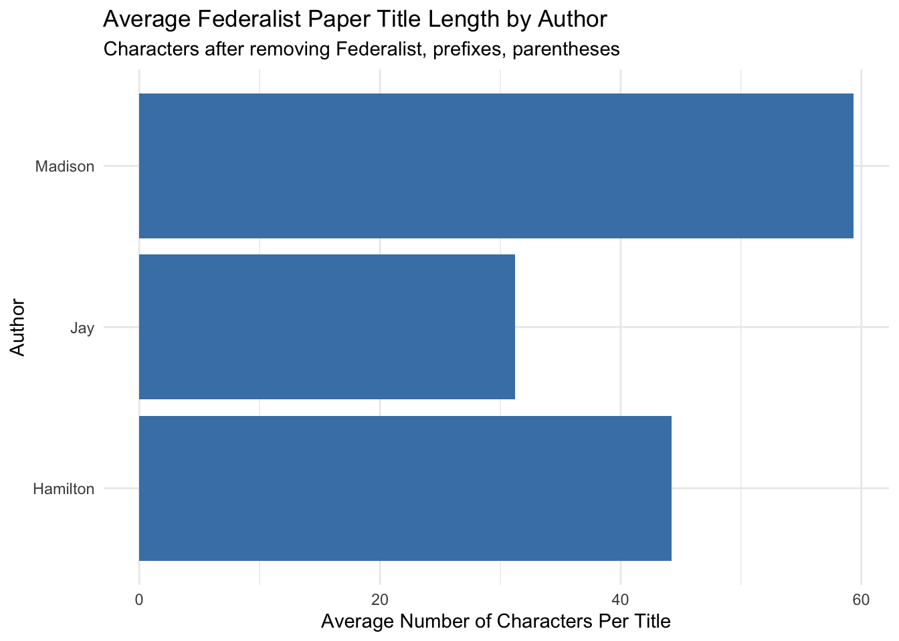

# A tibble: 6 × 4
paper author disputed title
<dbl> <chr> <chr> <chr>
1 1 Hamilton no FEDERALIST No. I. General Introduction
2 2 Jay no FEDERALIST No. II. Concerning Dangers from Foreign Fo…
3 3 Jay no FEDERALIST No. III. The Same Subject Continued (Conce…
4 4 Jay no FEDERALIST No. IV. The Same Subject Continued (Concer…
5 5 Jay no FEDERALIST No. V. The Same Subject Continued (Concern…
6 6 Hamilton no FEDERALIST No. VI. Concerning Dangers from Dissension…
# A tibble: 3 × 3
author n_papers mean_chars
<chr> <int> <dbl>
1 Madison 29 59.3
2 Hamilton 51 44.2
3 Jay 5 31.2
This table summarizes the average cleaned title length (in characters) by author. Madison’s titles are longest on average, while Hamilton and Jay tend to use slightly shorter titles. Madison had 29 papers, Hamilton 51, and Jay 5.
# A tibble: 3 × 2
author avg_use_the
<chr> <dbl>
1 Hamilton 80.4
2 Jay 80
3 Madison 69.0
Here I found titles that began with “The” using str_detect(*). The positive lookahead (?=\b) made sure that the “The” was matched as a whole word at the start.
Show code
ggplot(by_author, aes(x = author, y = mean_chars)) +geom_col(fill ="steelblue") +coord_flip() +labs(x ="Author",y ="Average Number of Characters Per Title",title ="Average Federalist Paper Title Length by Author",subtitle ="Characters after removing Federalist, prefixes, parentheses" ) +theme_minimal()

This chart visualizes the differences in average title length across authors, and puts into perspective the table from by_author. Madison shows the highest mean character count, suggesting that he may have had a preference for longer or more descriptive titles. Jay has the lowest mean count, with Hamilton in the middle of the two.
Show code
ggplot(titles_starting_with_the, aes(x = author, y = avg_use_the)) +geom_col(fill ="darkgreen", width =0.75) +coord_cartesian(ylim =c(0, 100)) +labs(x ="Author",y ="Percent of Titles beginning with 'The'",title ="Percent of Titles beginning with 'The' by Author" ) +theme_minimal()
This plot shows the share of each author’s titles that start with “The.” Differences are small, particularly between Hamilton and Jay (with Hamilton having the highest by a very tiny margin), but the pattern displays variation in how authors write their titles.